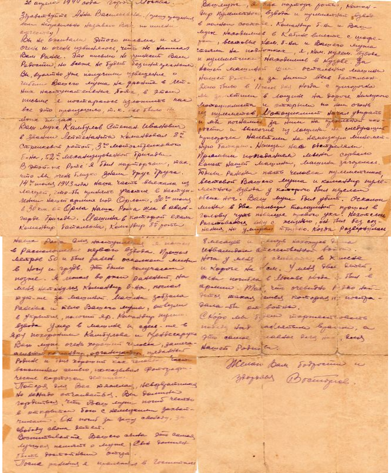

«Здравствуй, многоуважаемый брат Ваня Маркович. Разреши передать свой фронтовой чистосердечный офицерский пламенный привет и пожелать тебе наилучшего здоровья в твоей молодой жизни. В первых строках моего письма хочу сообщить о том, что я в настоящее время нахожусь жив, здоров, того и тебе желаю. Дорогой брат Ваня М., пишу письмо, но много описывать не стану, потому что нового особенного нет ничего. Но хочу всё же описать свою жизнь, нахожусь на старом месте. Хоть твоё место тебе неизвестно, но оно не интересует тебя. В общем, всё время на Ленинградском фронте. Живётся по этому времени очень хорошо. Сейчас находимся на отдыхе, одновременно учимся и применяем знания, чтобы пойти в решающий бой. (Далее непонятно) с новым кругозором военного дела (далее непонятно) от врага наверняка. Самочувствие моё очень хорошее и время есть, где культурно провести. Каждый день «кино» или концерт и другие игры: бильярды, домино, шахматы и т. д. Правда, приходится работать над собой с подчинёнными. Ваня, моя квалификация очень весёлая, Пулемётчик. Командир пульроты. В общем, пока всё хорошо, дальше посмотрим. А сейчас, как ты видишь (далее неразборчиво), а для нас этого и надо, ну и кормёжка хороша. Но это всё не то... Сейчас много думаю про вас, про ваше здоровье, про вашу жизнь. Вспоминаю свою домашнюю жизнь, вспоминается 10 августа 1941 года, как я выехал из дому. Как мне сначала было трудно в армейской жизни — вдали, жизни в училище. Но как знаешь пословицу Суворова, «Больше пота в учении, меньше крови в бою». Но когда кончил свою школу, совсем не то пошло. Ваня, не могу описать того, которое накопилось за 2 с лишним года. Но недалёк тот час, когда соберёмся все за столом. Враг не тот, что был вначале, война врага исшатала на силу Красной Армии и ещё (далее не видно) один сильный удар и вот будет разбит, и победа будет за нами, и если живы будем, выпьем в честь победы. Ваня, вы читаете новости с газет, и так слышите, какие происходят на фронте. Ваня, пиши ты письмо, мне ваше письмо интереснее. Я ожидаю с нетерпением. Описывайте всё подробно. Как здоровье, какие новости, как поживаете. Но вот всё то, что я хотел описать. Передавай всем привет. Папаше, мамаше помогай. А пока до свидания.»
«Здравствуйте, папаша, мамаша, Дуся, Саша, Валя. Шлю я вам свой красноармейский привет и желаю всего хорошего в вашей жизни. Притом ещё спешу сообщить о себе, о своём состоянии и узнать о вашей жизни. Папаша, я сообщаю о себе, о том, что я нахожусь в городе Фурмане в госпитале. 28/1 42 года в 10 часов утра напали немецкие самолёты и бомбили, и мне пришлось принять ранение в голову, где пришлось забыть на некоторое время про вас, но видно ещё есть счастье в жизни, смотреть на белый свет. Мамаша, я сообщаю вам, что на фронте я встречал Федотку, его ранили в руку. Притом сообщаю, я потерял связь с семьёй. Толи она живёт в Сизой или у вас. Не получал писем, как выехал на фронт 8 XI 41 года. Мне Федотка пояснил, что будто Дуся приезжала за ними, и теперь я не знаю, откуда взять сведения, где находятся. Если в самом деле у вас, то я прошу вас, отбейте телеграмму в двух словах. Затем, пока всё, пишите поскорее письма, буду ждать с нетерпением, здоровье пока ничего, ранение не такое тяжёлое, хотя кости наружу, но мясо нарастёт. Прощайте, если Нюся здесь, то передавайте привет, и горячо целую её и милых деток, и вас всех. Ваш зять, Трунилин.»
«Действующая армия П. П. С. #1708 141 осп. 12 мая 1942 года. Здравствуйте, дорогие мои: Шура, Витя и Люда. Ну, Шурочка, сегодня для меня был радостный день, я получил от тебя 3 открытки и два письма, хотя в них содержание опечалило меня. Ну что ж, мои дорогие, нужно всё сейчас переживать, по твоему описанию, Шурочка, трудно тебе жить, я это чувствую, ну ничего, моя дорогая, осталось недолго, т. Сталин дал приказ в 1942 году изгнать немцев, и мы их, паразитов, прогоним, и тогда заживём. Витя и Люда, перестаньте баловаться, маме и без вашего баловства тяжело, если вы не перестанете баловаться, то война будет ещё долго, а если вы не будете баловаться, то война скоро кончится и я скоро приеду к вам. Шура, я находился от дома в 120 километрах, теперь нахожусь тоже недалеко, я думаю, скоро наши родные места будут наши. На завод напишу письма. Попробую поискать своих. Шура, я нахожусь в сапёрном батальоне на должности замполитрука. Ну пока, до свидания. Целую всех. Сергей.»
«Добрый день, мои Родные Мама, Люся, Игорь и Леночка!!! Милые простите, что я вам так долго не писал. Письма ваши все получал, за которые большое спасибо. Их, мои родные, очень мало. Как хочется почитать в свободную минутку ваше письмецо, да еще такое, как вы пишите. После такого письма еще становишься злей, еще больше желания сделать больше, бить сильней эту гадину. Спасибо, милые, за такие письма. Я очень доволен, даже не знаю, как передать мою радость, что хотя через письма, но вы вместе со мной. Как хорошо, что вы все матери, сестры, братья, родные и близкие вместе с нами куете с нами победу – это еще один их трех залогов нашей победы. Конечно, жаль умереть, но и в тоже время хочется умереть, если твоя смерть приблизит час победы, вы, мои родные, будете жить, замечательно, будете о нас петь замечательные песни и будете с гордо поднятой головой и будете говорить, что ваш родной сын, брат, дядя погиб честно в борьбе за родину, за освобождение. Мои милые, мои дела хороши. Только давно не получал писем от Коли, да и сам давно ему не писал. Как милые Ваши дела? Как, мамочка, твое здоровье? Пишите больше и чаще. Крепко целую Ваш Жора»
«26 апреля 1944 года. Город Москва. Здравствуйте, Анна Васильевна (прошу прощения, если неправильно называю вас по имени и отчеству). Вы не ожидали этого письма, и я очень и очень извиняюсь, что не написал вам ранее. Это письмо не принесёт вам радости, но всё же не будет безынтересным. Вы, вероятно, уже получили извещение о гибели вашего мужа на фронте, в летних наступательных боях, в этом письме я постараюсь изложить, как всё это произошло, так как всё было на моих глазах. Ваш муж, Камбулов Степан Иванович, в звании лейтенанта командовал 8-й стрелковой ротой 3-го мотострелкового бат-на, 52-й механизированной бригадой. В этой же роте я был парторгом, так что мы очень близко знали друг друга. 14 июля 1943 года наша часть выехала из лагерей, чтобы принять участие в наступлении нашей армии под Орлом. 20 июля в 30 км от Орла наша рота шла в авангарде бригады. Машина, в которой ехали командир батальона, командир 8-й роты, ваш муж, я, как парторг роты, командир пулемётного взвода и пулемётный взвод в полном составе. Командир б-на и ваш муж находились в кабине вместе с шофёром (неразборчиво) ком. батальона и вашего мужа стояли на подножках, я, ком. пулем. взвода и пулемётчики находились в кузове. За нашей машиной шли остальные машины нашей роты, а за ними весь батальон. Дело было в 11 часов дня. Когда с пригорочка мы заметили в лощине на дороге немецкого мотоциклиста и открыли по нему огонь из пулемётов, мотоциклист начал удирать, и мы погнали за ним на предельной скорости, и, выскочив из лощины на следующий пригорочек, налетели на немецкую миномётную батарею. Немцы нас обстреляли прямым попаданием. Мина сорвала капот нашей машины, машина загорелась. Были ранены пять человек пулемётчиков (неразборчиво) вашего мужа и командир пулемётного взвода, у которого был перелом обеих ног. Ваш муж был убит. Осколок мины, в два пальца толщиной, прошёл в голову, чуть повыше правого уха. Не хотелось расставаться ему с жизнью, он был без сознания, но умирал трудно. Когда развернулась наша рота для наступления, я пошёл в расположении первого взвода. Прошёл метров 50 и был ранен осколком мины в ногу и грудь. Это было получасом позже. Я лежал во ржи раненый, на меня наткнулся командир б-на, послал тут же за машиной. Машина забрала раненых и тело вашего мужа, отвезли в укрытие, положит яр. командир пулем. взвода умер в машине, и здесь же, в Яру, похороним Камбулова и Крендесарука. Ваш муж очень хороший человек, замечательный командир, организатор, преданный родине, и был хороший, как человек. Часто вспоминал семью, показывал фотографические карточки детишек. Потеря для вас тяжела, невозвратимая, но не надо отчаиваться. Вы должны гордится, что ваш муж погиб честно, в открытом бою с немецкими захватчиками. Он погиб за вашу свободу, за свободу своих детей. Воспитывайте вашего сына, это самая лучшая память о муже: сын должен быть достойным отца. После ранения я пролежал в госпитале 8 месяцев и теперь нахожусь дома. Инвалидом отечественной войны. Нога у меня не сгибается (далее непонятно). У меня двое детей. Жена погибла в Москве, когда был в армии. Так что, очевидно, не найдётся такая семья, которая не пострадала бы от войны. Скоро мы будем торжествовать Победу над проклятыми врагами, а это самое главное для нас, для нашей родины. Желаю вам радости и здоровья. Восторов.»
«Здравствуй, любимая Анютка. Любимая! Тебя я вижу сквозь все преграды, сквозь дым и пламя жизни фронтовой. Привычным почерком пишу, пишет тебе любимый, милый и родной. Под градом пуль пишу тебе, родная. Земля дрожит от грохота кругом. Пишу я в блиндаже, былое вспоминая. Пишу под сильным вражеским огнём. Земля дрожит и сгорает от огня. Я знаю, весточка, написанная мной, прорвётся, долетит, родная, до тебя. Тебя здесь нет, но ты как будто рядом. Мне кажется, я слышу голос твой. И снова я с весёлым нежным взглядом, как очарованный, стою перед тобой. Мне хочется, чтоб сердце вновь проснулось и снова видит образ твой. Чтоб прошлое обратно к нам вернулось и счастье возродилось бы домой. Анютка, конечно, всё хочется снова с тобой встретиться, как было, но не в этой обстановке, в которой я этой нахожусь, и в мирной, чтобы не слышать того, что и раньше слышала ты и в тихой обстановке, в которой ты находишься. Анютка, писать кончаю, но хочу я узнать, как ты живёшь и что делаешь и как доехала домой. Всё, кончаю. Поздравляю тебя с новым, 1945 годом. Поцелуй за меня маму и Петю. Анечка, целую бесконечно раз и крепко жму твою руку. 29.12.1944 года»
«3/VII-44 года. Здравствуйте, дорогие родители. В первых строках своего письма я сообщаю, что жив, здоров, чего и вам желаю в будущей жизни. Передаю вам свой пламенный привет: папа, мама, Коле, Сене, Наде, Толе и Олечке. Мама и папа. Благодарю вас за ваш подарок, который вы передали с Зубенком. Моя рана уже заживает, скоро будем уезжать в Ворошиловград. Одно плохо только, что не придётся домой приехать. Я знаю, что вишни уже почти спелые. Мы уже кушали в госпитале, .... привозили нам. Со мной ещё один мальчик из Будёновки, из нашего совхоза. Его отец возил директора совхоза. Зайцев. Я знаю, что сейчас и Маруся с Петей приехали до нас, вся семья, кроме двух: Вани и Васи, может быть, жив буду, приеду. С тем до свидания. Ваш сын Ваня. Сталинская обл., г. Мариуполь, Будённовский район, совхоз «Роза Люксембург», ферма-2 Бойко Ст. Конст. Обр. адрес: Донбасс, город Горловка, палата 56. Бойко И. С.»
«Любимой. Я этот портрет посвящаю тебе, Любимой Полюсе, красотке. Гляди на него, вспоминай обо мне. Живу я на дальней сторонке. Живу, но мечтою своей и душой Направлен к сынам и своей я любимой, Ведь нет у меня и родней, и милей Семьи своей милой и дивной. Разлука с тобою приходит к концу, Война прекратилась с Победой! Ты нежно прильнёшь к своему молодцу и тайны свои мне поведаешь. Быть может, во мне ты найдёшь перемену, Я внешне уже изменился, Но в сердце моём не увидишь измену, Оно к тебе только стремится. Меня отделяли километры дали, Меня отделяли пески и леса, Но это бессильно — любовь не отняли, Она напевала свои голоса. Прекрасною, сильною песнею были, И с песнею этой к тебе я приеду И нежно прижму тебя, дорогая. Счастливый праздник — отпразднуем вместе с тобою Победу! 09.05.1945»
«Здравствуйте, мои родные. Дуся, Геня, Аня и Диря!!! Я жив и невредим, желаю вам крепкого здоровья. Ну, мои милые, я не могу дождаться от вас писем. В чём дело? Я вам посылаю очень часто, если не каждый день, то на день два-три. Ну, сегодня решил написать В/К вашего РВК. Ну, что ж сделаешь, вероятно, все твои письма собираются в одну кучу, подожду, в скорости должен получить. Ну, до свидания. Крепко целую. Ваш родной Папа Миша. 4.9.42 г.»
«Здравствуй, дорогой, любимый Ниночек и Юра. Прошло не так уж много времени, как я уехал, а я с каждым днём всё больше скучаю о тебе. Сегодня 13 мая, через 4 дня мы должны отчалить от этого глухого и дикого места. Дня отъезда жду с нетерпением, хотя здесь неплохо, но дома лучше. Хочу поскорее увидеть тебя, мой дорогой, любимый Ниночек. Сейчас 1 час дня, я читал книгу «Северные рассказы». Использую время до обеда, чтобы написать тебе несколько тёпленьких слов. До свидания, крепко целую мою дорогую Ниночку и Юру. 13.05.43 Жорик»
«Здравствуй, тётя Настя. Извините мне за то, что я вам пишу своё командирское письмо. Тётя Настенька, разрешите мне сообщить вам о том, что ваш сын Пётр Сергеевич погиб честно, за родину, на поле боя с немецкими фашистами, а сейчас я его похоронил. Как лучшего товарища, и мы с ним давно, то есть уже около двух лет, как мы с ним воюем. Я его командир, Роженко Иван Сергеевич, и сообщаю вам, как лучший старший роты. До свидания, с приветом к вам. Л-т Роженко. До свидания, мамаша. Ответим за вашего сына ещё ударом и отомстим за вашего сына этому проклятому зверю. Вот всё. Л-т Роженко. Полевая почта 97619-В Роженко Иван Сергеевич. 12.2.44 года.»
«Здравствуйте, дорогие мои Зиночка, Татьяна, Мама Виктор! Шлю горячий привет из Германии, мы теперь находимся недалеко от Берлина 75 км. Ваши письма получаю, но вы обижаетесь, что редко пишу, но сколько могу и так время хватает. Форсировал Одер, за что получил Правительственную награду - орден Богдана Хмельницкого. Скоро с фашизмом покончим. Пока все. Досвидание. Крепко целую всех, приветом Ваш (подпись).»
«На память лучшему любимого другу Зины от Николая. На память тебе, дорогая, Чтоб вечно ты видела меня, За дружбу в тяжёлое время, Мы будем друзьями навсегда. Ты помни моменты, моя дорогая, Когда мы встречались с тобой, Гремели громады, гудели снаряды, С победой вернёмся с тобою домой. В дни войны (Германия) 1945 Победоносный год»
«30 мая 45 г. Чехия. Млада, Болеслава. После боёв с фрицами. После последнего генерального наступления! Я вернусь! Любимым: Папе, маме, сестрёнке Тамаре.»
«Шлю горячий привет из фронта своей дорогой жене и милым деткам! Пусть вас хранит моя забота и любовь о вас. Поздравляю я вас, мои милые, с Новым годом и желаю вам нового счастья. Ваш муж и отец».